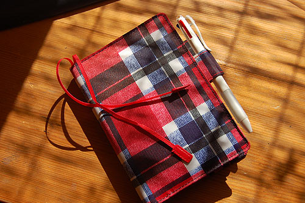
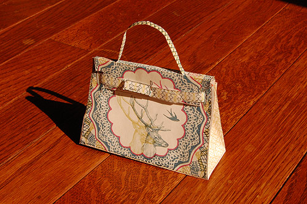

2008年12月 の記事
-
>まっちゃんさま
ほぼ日手帳にしてみましたー。 毎年色気のない黒いもらい物手帳を使っていたのだけど、ちょっと気分をかえてみよかと。 とりあえず一番最初に書いたのは出社日。 旧暦と月の満ち欠けがわかるのがいいなーっと。…

-
モノレールが好き
羽田に行くための交通手段の中ではモノレールが一番好きだなー 20分くらいの時間がトーキョーの喧噪を咀嚼するのにちょーどいいのよね。 広い窓から、トーキョーの縁側を見るかんじ。 水で縁取りされている…

-
＞しのやんさま
アサヒガニとゆーカニなんだかえびなんだか不思議なカタチのカニを買う。 大きさは軽く手を丸めたくらいのおおきさ。 150円！！驚異。かかくはかい（？）。 うむ。 内子はプチプチ。身が甘い！ 先日のマン…

-
＞井上さま
なぞの入り浸りネコ「ミケ」 朝来て、昼来て、おやつに来て、夜に来る。 首輪をしていてそこそこ毛艶が良いから、どこかに本宅があると思われるのだがなぁ～… エサくれ攻撃がすさまじい。

-
>りえさま
エルメス ケリーバッグ …のペーパークラフト。 ケリーっていうか、このくたくた感はバーキンっぽいな。 ここから ウチの母親は裁縫女王なので、布で作ってーと言えば、インクジェット＆アイロンプリント…

-
〉まっちゃんさま
今週のひるご飯。 仕事しながら、余り物でテキトーなものを作ってモニター見ながらお昼とゆーのがほとんど。

-
カニ日
スーパーでカニ買った。428円 ワタリガニって書いてあったけど、ハサミの感じとかみるとマングローブガニっぽい。 ん～！！！珍味珍味珍味～！！このミソと内子がまた！ 卵黄とカラスミとミモレットとウ…

-
まどべ
枯れたゴーヤと簾模様。 夏はずーっと前に終わっているんだけど、今年は忙しさの中に置いてきちゃったなー。 借景ならぬ借模様のカーテン。

-
アニック・グタール
お仕事終わったご褒美に。アニック・グタール2つ買っちゃいましたー。えへー。 ローズアブソリュとガーデニアパッション。 バラとくちなし。乙女なお買い物。 天然香料のせいか、寝香水にしても心地良いかんじ…

-
ひみつの…
イタリアン。 8時半からスタートして、気がつけば2時！！！ 相変わらず、気ままに作ってもらえるお料理は美味しくて、写真撮る前に食べちゃうというありさま。 他に魚料理（アクアパッツアうんまいの）2種と鴨…

-
〉まっちゃんさま
ずーーっとセブンイレブンご飯＆冷食ご飯だったので、ごちそうです。 今日は団体だか接待だかが入っているよーで、慌ただしかったよーなどーなのか。 どーゆーわけか、ここの前菜にはイナゴの甘露煮が出てくるのだ…

-
菓子パンのくに
スーパー行ったら、広大な菓子パンコーナーが。 こっちのひとたちは菓子パンが好きなのか。 「ミカエルのジャリパン」という呪文を唱えるとこっちのひとたちは飛びついてきます。

-
くたびれフォント
朽ちて独自フォントになってますがな

-
すくすく
むかしアシスタントだった男のコ（みそじ）にお昼をごちそうになった。 今ではすっかり有能なスタッフになっちゃってなんだかもうー。 アシスタントの男のコたちはみんなすくすく育つ。（アシスタントはなぜかみ…

-
【カニまんが】かにおくん
カニの美味しい季節です。 昨日も通販で4kg1万円でした。 カニカニカニ～！って浮かれた通販でしたかに。